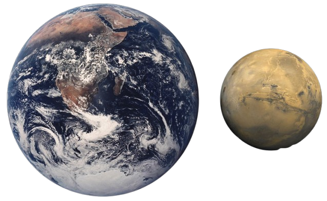
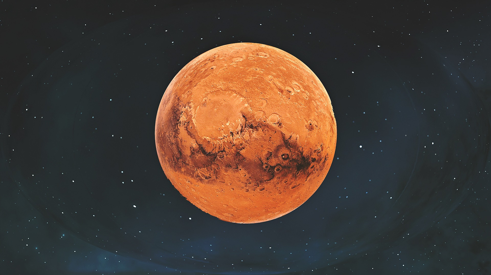

Марс, четверта планета від Сонця, є другою найменшою планетою Сонячної системи; тільки Меркурій менший. Марс становить приблизно половину (53 відсотки) розміру Землі, але оскільки Марс є пустельною планетою, він має таку ж кількість суші, як і Земля. Просте питання про те, наскільки великий Марс, залежить від того, які вимірювання ви розглядаєте.
Незважаючи на зовнішній вигляд, Марс не є кулею. Оскільки планета обертається навколо своєї осі (кожні 24,6 години), вона випинається на екваторі (як Земля та інші планети). На екваторі Марс має діаметр 4222 милі (6794 км), але від полюса до полюса діаметр становить 4196 миль (6752 км). Звичайно, радіус Марса дорівнює половині діаметра планети.
Окружність Марса навколо екватора становить близько 13 300 миль (21 343 км), але від полюса до полюса Марс знаходиться лише в 13 200 милях (21 244 км). Така форма називається сплющеним сфероїдом.

Маса і сила тяжіння

Маса Марса становить 6,42 х 1023 кілограми, приблизно в 10 разів менше, ніж Земля. Це впливає на силу тяжіння. Сила тяжіння на Марсі становить 38 відсотків земної гравітації, тому 100-фунтова людина на Землі важила б на Марсі 38 фунтів.
Найвища гора, найглибша долина
На Марсі розташована як найвища гора, так і найглибша, найдовша долина в Сонячній системі. Гора Олімп має висоту приблизно 17 миль (27 кілометрів), що приблизно в три рази перевищує висоту гори Еверест. Це також один з найбільших вулканів Сонячної системи. Його діаметр становить близько 370 миль (600 кілометрів), його достатньо, щоб охопити весь штат Нью-Мексико.
Система долин Valles Marineris — названа на честь зонда Mariner 9, який виявив її в 1971 році — може сягати на глибину до 6 миль (10 кілометрів) і тягнеться зі сходу на захід приблизно на 2500 миль (4000 кілометрів), що становить приблизно одну п’яту від відстань навколо Марса і близька до ширини Австралії або відстані від Філадельфії до Сан-Дієго.